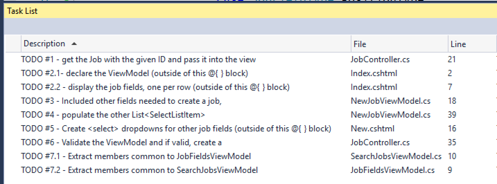

Assignment: TechJobs (Object-Oriented Edition)
Introduction
Your apprenticeship at LaunchCode is going well! Only a few weeks in and you're regularly making contributions to code that will eventually be used by all LaunchCode staff.
Your last task was to get the controller and view layers in good shape, so now it's time to turn your attention to the Model.
Your mentor on this project is Cheryl, one of the developers at LaunchCode. She regularly mentors developers that are just getting started with their careers.

(If you're interested, you can listen Cheryl talk about mentorship on the Greater Than Code podcast.)
She's done some initial work on the project and left you some TODOs. After seeing your strong work on your last project, Eliot reported that you've been doing great work, and learning quickly, so the tasks in this project are a notch up from the last in difficulty.
Learning Objectives
In this project, you'll show that you can:
- Read and understand code written by others
- Work with model classes via a data access layer (in this case,
JobData) - Use model binding and validation with ViewModel classes
- Create class extensions (that is, use inheritance)
TechJobs (Object-Oriented Edition)
Cheryl has gotten the ball rolling in the Model and ViewModel, having added a Job class, along with classes to represent the individual properties of a job: Employer, Location, PositionType, and CoreCompetency. She has also refactored the View and Controller layers to use these new classes. Finally, she has modified the JobData class to properly create Job and related objects when importing data from job_data.csv.
As the team gets closer to hooking the app up to a database -- and abandoning the test data they've been using -- they'll want an easy way to add new jobs via the user interface.
Your Assignment
You've been tasked with completing a feature that allows new Job objects to be created and added to the system. You'll touch all layers of the application, but you'll be primarily working with Model and ViewModel classes to complete this feature.
Getting Started
Set up a local copy of the project:
- Visit the repository page for this project and fork the repository to create a copy under your own GitHub account.
- From within Visual Studio, choose the Team Explorer tab near the bottom of the Solution Explorer pane. If you don't see this tab, you can open it via the application menu: View > Team Explorer.
- Click on the Manage Connections icon (see below), and select Clone from the GitHub section of the Team Explorer and select your
TechJobsOOcopy from the modal window. Be sure to change the Path field to the location at which you would like the project to live, ideally inside of a folder you've been using to store other projects.
- Open the solution via either the notification within Team Explorer or via File > Open > Project/Solution.
- Pop back over to the Solution Explorer to preview the code.
We've said it before, but it still rings true: A big part of your assignment is reading and understanding code that others have written. You'll spend a significant amount of time reading the code that you are starting with, and that's to be expected.
The Model
The largest amount of new code is in the Model. Open up the Models/ folder and you'll see several classes, some of which you'll work with directly, and some which you won't.
The Job Class
Working with data stored as strings in dictionaries and lists isn't a good long-term solution, for various reasons that we will discuss momentarily. The Job class introduces an object-oriented design to the application.
It contains all of the properties that you've grown used to while working on TechJobs: Name, Employer, Location, CoreCompetency, and PositionType. There's also an ID property which will be used to uniquely identify Job objects.
The main difference between the object representation of a job and the string-based representation is that the values of Employer, Location, and the other non-ID properties are no longer strings, but instead are classes of their own.
Job Fields
If you don't have it open already, open the Job class. You'll see the following properties (among others):
public string Name { get; set; }
public Employer Employer { get; set; }
public Location Location { get; set; }
public CoreCompetency CoreCompetency { get; set; }
public PositionType PositionType { get; set; }Of these, only Name is a string. Cheryl has created classes to represent each of the other properties. Each of these classes -- Employer, Location, CoreCompetency, PositionType -- have Value and ID properties.
If you look at the guts of any of these job property classes, you'll see that they each extend JobField, and don't have any additional properties or methods of their own. We'll customize and add to these classes in a future assignment, but for now we only need to work with their inherited Value and ID properties.
So, for example, if you had a Job instance, you could get the name of the employer this way:
// job is an instance of Job
string employerName = job.Employer.Value;Additionally, the ToString() method of these classes is set up to return the Value property. Thus, using one of these objects in a template, or in another string context like Console.WriteLine, will print the Value property.
// prints the name of the employer
Console.WriteLine(job.Employer);Why do we go to all of this trouble, when we could store this job-related data as strings? Well, here are a couple.
Eliminate duplication of data
In our application we'll have multiple jobs that have the same value in a given field. For example, there are multiple jobs with position type "Web - Full Stack", and for several employers, there are several jobs with that employer. Were we to store the values of these fields as strings directly within the Job class, these strings would be repeated in several places across the application.
By using objects, we can have a single PositionType object with value "Web - Full Stack", and then have each job that wants to use that position type hold onto a reference to the given object. Similarly, we can have one Employer object for each employer.
Aside from reducing the amount of raw data / memory that the application uses, this will allow data to be updated more easily and properly. If we need to change the name of an employer (e.g. due to a typo, or a name change at a company), we can change it in one place: the single Employer object that represents that employer.
Enable extension
While the four Job properties represented by objects will primarily be used for their string values, it's not hard to imagine that we would want to add additional properties to them.
For example, it would be useful for an Employer object to have an address, a primary contact, and a list of jobs available at that employer.
For a Location object, it would be useful to have a list of zip codes associate with that location, in order to determine which location an employer or job is located in.
If we were to store these properties as strings, extending and modifying this behavior would be much more complicated and difficult in the future.
There's one more class on Models/ that we need to introduce.
JobFieldType.cs
This class is an enum that enables the view and controller layers to easily ask for data related to a specific job field, or to all fields.
The enum has the values Employer, Location, PositionType, CoreCompetency, and All. These take the place of the "magic strings" that we were using all across our code in the first two iterations of TechJobs. Previously, we would find all employers this way:
List<string> employers = JobData.FindByColumnAndValue("employer", "LaunchCode");Now, however, we can do this:
List<JobField> employers = jobData.FindByColumnAndValue(JobFieldType.Employer, "LaunchCode");By using enum values instead of strings, we eliminate the possibility of runtime errors. In other words, the compiler will force us to use a valid JobFieldType, whereas if we had misspelled "employer" in the first example, we wouldn't have found out until running our code.
Many of the methods in JobData now work by taking in a JobFieldType parameter rather than a string.
We also use the JobFieldType values to render search and list options in the view, and to collect this options in the ViewModel and controller layers.
The Data Layer
JobData.cs and JobDataImporter.cs
In this updated version, the data access functionality has been moved into its own directory, Data/. This is partly to better organize our code as the application grows, and also to anticipate the move to a database in the near future. Additionally, we've moved the logic to import data from the CSV file into JobDataImporter.cs.
The JobData class has been refactored to work with Job objects, and the objects that a Job has references to (Employer, Location, etc), rather than strings. You won't need to understand the internals of how this works. Instead, you'll need to understand how to use the class.
Rather than having a collection of static methods, JobData now has several instance methods, with usage outlined below. Each controller already has a JobData object set up for you, named jobData.
| Method | Return Type | Description |
|---|---|---|
Find(int) |
Job |
Find a job by its ID |
FindByColumnAndValue(JobFieldType, string) |
List<Job> |
Find all jobs matching the given string in the given column/property |
FindByValue(string) |
List<Job> |
Find all jobs matching the given string in any fields |
Examples:
// Find the job with id 42
Job someJob = jobData.Find(42);
// Find all jobs at LaunchCode
List<Job> jobsAtLaunchcode =
jobData.FindByColumnAndValue(JobFieldType.Employer, "LaunchCode");
// Find all jobs involving Ruby
List<Job> jobsInvolvingRuby = FindByValue("ruby");The full list of jobs is available as a property of JobData. Thus, you can do fun stuff like:
// Get the full list of jobs
List<Job> allOfTheJobs = jobData.Jobs;
// add a new Job object to the list
jobData.Jobs.Add(newJob);Additionally, collections of classes that make up the individual properties of a Job object -- Employer, Location, CoreCompetency, PositionType -- are available as properties of JobData. For example, all employers are contained in property called Employers.
There are two methods that you might want to use here. Here they are:
// Find the employer with id=7
Employer anEmployer = jobData.Employers.Find(7);
// Get all employers
List<Employer> allEmployers = jobData.Employers.ToList();The ViewModel
You won't be working on search and list functionality in this assignment, but you should know that Cheryl has refactored all of that code to use ViewModels as well as model classes. These ViewModels are JobFieldsViewModel and SearchJobsViewModel.
While you won't be working in these classes, you'll likely learn something new by reading that code, so we encourage you to dive into those files.
There's another ViewModel class that you will be working with: NewJobViewModel. This class is meant to enable display of a form for creating a new job, along with processing of the form. The code for doing this with two properties, Name and EmployerID is already in place. The field for Name is a string and will be displayed as a text box, while EmployerID will be displayed as a dropdown (that is, a <select> element) that will allow the user to select from the list of all existing employers.
Part of your work will be to complete this ViewModel to enable full creation of a Job object, including all necessary fields.
The View
Previously-existing view templates are still in place, though they've been refactored to use ViewModels rather than the ViewBag.
There are two new view templates in Views/Job/: Index.cshtml and New.cshtml. You'll be adding code to each of these. The first will be used to display data associated with a single job, while the second will display the form used to create a new job.
Your Tasks
In Visual Studio, select View > Task List to pop open a small pane at the bottom of the window. This list is populated by any code comments that start with TODO. In particular, you'll see your tasks listed.

Display A Single Job
Your first two tasks involve display the data associate with a single job. When you're done, visiting the URL /Job?id=X will display the details of the job with ID equal to X.
Within the Index action method of JobController, you should retrieve retrieve the job with the given ID, and then pass it into the view without using ViewBag. In other words, use the Job as a ViewModel.
Within Views/Job/Index.cshtml you need to declare the ViewModel type and then display the properties of the job in a table.
Create New Jobs
Our JobController class and the Views/Job/New.cshtml view template is set up to allow a user to create new jobs through the interface, but it isn't complete. Getting this to work comprises your next set of tasks.
First, you'll need to work within NewJobViewModel to set up the properties to allow for both form display and form submission. Cheryl has put in place the code to display and process the Name and the data associate with an employer.
Notice that rather having a property for Employer, we have a field for EmployerID.
[Required]
[Display(Name = "Employer")]
public int EmployerID { get; set; }In the user interface (that is, on the web page) we'll only need to display the name of each employer, and when processing the form, we'll use the ID to retrieve the employer from the data layer.
Below the property declarations we build up lists of SelectListItem objects, which we've seen are used to render <select> lists.
For tasks #3-5, you'll need to mimic the code that's in place for EmployerID and the Employers list.
Once you have that stuff in place, you'll be ready to process the form in task #6. Validate the form in JobController.New, and if it's valid create a new Job object and add it to the data layer by calling jobData.Jobs.Add(newJob).
To create the new job, you'll need to find the pre-existing objects for all properties other than Name (Employer, Location, etc). Do this using the methods discussed above. There isn't a constructor for Job, so you'll need to use the property initializer syntax:
Job newJob = Job {
// set properties within braces
};Once you've created the new job, redirect to the single job display page that you created above.
If the ViewModel fails validation, display the form again.
Make the ViewModels DRY
Remember the DRY principle ("Don't Repeat Yourself")? Well, our ViewModels aren't very DRY. JobFieldsViewModel and SearchJobsViewModel have some repeated code, since the associate views contain related data.
Fix this by finding the common code (including potentially repeated code in methods), and placing it in a BaseViewModel. Then have each of these classes extend BaseViewModel.
Sanity Check
Before submitting, make sure that your application:
- You can create a new job from
/Job/Newby entering the name of a job, and selecting employer, location, skill, and position type values from dropdown selects. - If you leave off the name of a job, you are presented with the form again, and a message describing the error is presented on the page.
- Upon creating a new job, you are sent to a screen displaying the data for only the new job. The URL for this new job is of the form
/Job?id=XwhereXis the numeric ID of the new job. - When searching and listing data, your new job shows up when appropriate. For example, you can see the job when searching for it by name, or by its employer.
- Within
ViewModelsyou have a new class that combines the repeated members ofSearchJobsViewModelandJobFieldsViewModel
How to Submit
To turn in your assignment and get credit, follow the submission instructions.